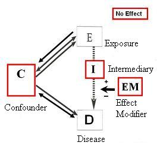
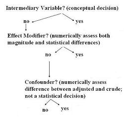
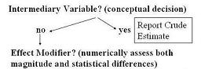
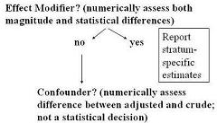
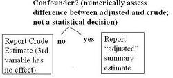

Lead Author(s): Jeff Martin, MD
Third Variable
When evaluating association between an exposure and an outcome, the possible roles of a third variable are:
- Effect Modifier
- Effect of the exposure on the disease that operates through a pathway other than through the third variable

Determining the Third Variable
So, there are four possibilities: the third variable can be Intermediary, Effect Modifier (interaction), Confounder, and No Effect. How are you going to determine which of these possibilities is occurring in your sample? The algorithm below is a useful place to start.

(1) Depending upon your research question, a third variable could be acting as an intermediary variable and if so, we would not want to adjust for it or control for it any way.
- Hence, this is the first decision to make.
(2) If you are not conceiving the third variable as an intermediary variable, then you need to assess whether it is an effect modifier.
(3) If it is not an effect modifier, then you need to assess if it is a confounder.
(4) If it is none of these, neither an intermediary variable nor an effect modifier nor confounder, then we simply say that is has no effect.
The decision you have to make is a conceptual one based upon your knowledge of the biological or behavioral system and the research question at hand.
- If you are conceptualizing the third variable as an intermediary variable, then you would not control for it.

Effect Modifier (interaction)
When the third variable is not an intermediary variable, you have to ask whether the third variable is an
effect modifier? 
- Assuming that the third variable is not being conceptualized as an intermediary variable, the more typical situation is that you have suspicions that the third variable could be a confounder because, for example, it is known to be associated with the disease in question.
- Before looking at confounding you are interested in whether the third variable is an effect modifier because this will give a richer understanding of the system.
In order to form stratum specifc estimates, you may have to adjust form a summary of the unconfounded stratum-specific estimates.
Confounder
When the third variable is not an effect modifier, you then look for evidence of confounding.

No Effect
If no confounding is present, you are left with the conclusion that the third variable had no effect.
- In that case, report the crude estimate as the final measure of association between exposure and disease.
References